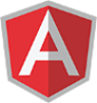

Compétences
Langages et Frameworks en cours d'apprentissage
html5
css3
Javascript
php
sql
Bootstrap
JQuery
Angular
Symfony

Issue d'une école polytechnique, j'ai entamé ma carrière professionnelle en tant que chargée d'études en hydraulique. Afin d'orienter mes compétences vers des métiers d'avenir, j'ai choisi la formation dispensée par l'école Up To by Simplon, qui va de pair avec mes projets à moyen et à long terme.
14/12/2015
-
à ce jour
7 mois de formation intensive, basée sur la pratique, l'autonomie et le travail d'équipe
Principaux partenaires : Face Hérault, DELL, Simplon et FrenchSouth.digital
2007
-
2013
Projet de fin d’étude : Étude d’Alimentation en eau potable du couloir de Tamalous, Ain Kechra, Beni Oulbane et des zones environnantes à partir du barrage de Guenitra
2013 – 2014
(9 mois)
Etudes des réseaux d'alimentation en eau potable et d'assainissement , élaboration des devis estimatifs et quantitatifs de projets
Juillet
2012
Stage d'immersion dans les différents services du ministère des ressources en eaux, et de découverte des tâches attribuées à chaque représentation régionale.
Juillet
2011
Étude des différentes étapes du processus de traitement d’eau du barrage de Tichi-haff.